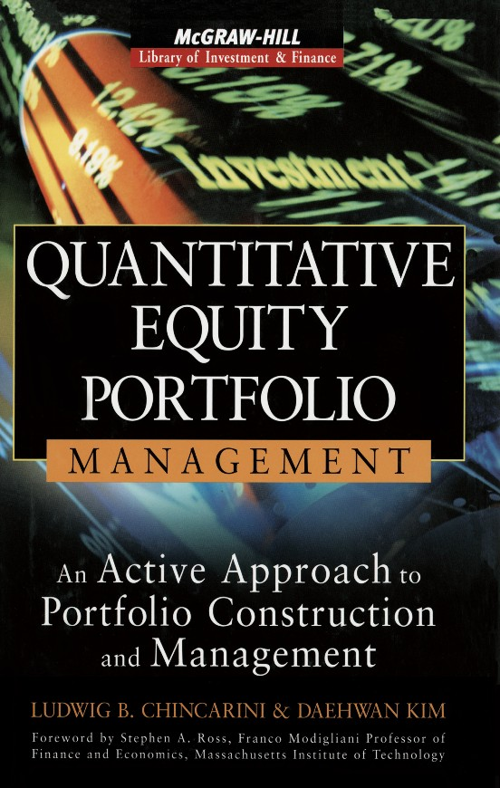

下一个 >

CoverTitle PageCopyright PageContentsForewordPrefaceNotations and AbbreviationsI: An Overview of QEPM1 The Power of QEPM1.1 Introduction1.2 The Advantages of QEPM1.3 Quantitative and Qualitative Approaches to Similar Investment Situations1.4 A Tour of the Book1.5 Conclusion2 The Fundamentals of QEPM2.1 Introduction2.2 QEPM α2.3 The Seven Tenets of QEPM2.4 Tenets 1 and 2: Market Efficiency and QEPM2.5 Tenets 3 and 4: The Fundamental Law, The Information Criterion, and QEPM2.6 Tenets 5, 6, and 7: Statistical Issues in QEPM2.7 Conclusion3 Basic QEPM Models3.1 Introduction3.2 Basic QEPM Models and Portfolio Construction Procedures3.3 The Equivalence of the Basic Models3.4 The Screening and Ranking of Stocks with the Z-Score3.5 Hybrids of the Models and the Information Criterion3.6 Choosing the Right Model3.7 ConclusionII: Portfolio Construction and Maintenance4. Factors and Factor Choice4.1 Introduction4.2 Fundamental Factors4.3 Technical Factors4.4 Economic Factors4.5 Alternative Factors4.6 Factor Choice4.7 ConclusionAppendix 4A: Factor Definition Tables5. Stock Screening and Ranking5.1 Introduction5.2 Sequential Stock Screening5.3 Sequential Screens Based on Famous Strategies5.4 Simultaneous Screening and the Aggregate Z-Score5.5 The Aggregate Z-Score and Expected Return5.6 The Aggregate Z-Score and the Multifactor α5.7 ConclusionAppendix 5A: A List of Stock Screens Based on Well-Known StrategiesAppendix 5B: On Outliers6. Fundamental Factor Models6.1 Introduction6.2 Preliminary Work6.3 Benchmark and α6.4 Factor Exposure6.5 The Factor Premium6.6 Decomposition of Risk6.7 Conclusion7 Economic Factor Models7.1 Introduction7.2 Preliminary Work7.3 Benchmark and α7.4 The Factor Premium7.5 Factor Exposure7.6 Decomposition of Risk7.7 Conclusion8 Forecasting Factor Premiums and Exposures8.1 Introduction8.2 When Is Forecasting Necessary?8.3 Combining External Forecasts8.4 Model-Based Forecast8.5 Econometric Forecast8.6 Parameter Uncertainty8.7 Forecasting the Stock Return8.8 Conclusion9 Portfolio Weights9.1 Introduction9.2 Ad Hoc Methods9.3 Standard Mean-Variance Optimization9.4 Benchmark9.5 Ad Hoc Methods Again9.6 Stratification9.7 Factor-Exposure Targeting9.8 Tracking-Error Minimization9.9 ConclusionAppendix 9A: Quadratic Programming9A.1 Quadratic Programming with Equality Constraints9A.2 A Numerical Example9A.3 Quadratic Programming with Inequality Constraints9A.4 A Numerical Example10 Rebalancing and Transactions Costs10.1 Introduction10.2 The Rebalancing Decision10.3 Understanding Transactions Costs10.4 Modeling Transactions Costs10.5 Portfolio Construction with Transactions Costs10.6 Dealing with Cash Flows10.7 ConclusionAppendix 10A: Approximate Solution to the Optimal Portfolio Problem11 Tax Management11.1 Introduction11.2 Dividends, Capital Gains, and Capital Losses11.3 Principles of Tax Management11.4 Dividend Management11.5 Tax-Lot Management11.6 Tax-Lot Mathematics11.7 Capital Gain and Loss Management11.8 Loss Harvesting11.9 Gains from Tax Management11.10 ConclusionIII: α Mojo12 Leverage12.1 Introduction12.2 Cash and Index Futures12.3 Stocks, Cash, and Index Futures12.4 Stocks, Cash, and Single-Stock Futures12.5 Stocks, Cash, Individual Stocks, and Single-Stock and Basket Swaps12.6 Stocks, Cash, and Options12.7 Rebalancing12.8 Liquidity Buffering12.9 Leveraged Short12.10 ConclusionAppendix 12A: Fair Value ComputationsAppendix 12B: Derivation of Equations (12.19), (12.20), and (12.21)Appendix 12C: Tables of Futures Leverage Multipliers to Achieve Various Degrees of Leverage13 Market Neutral13.1 Introduction13.2 Market-Neutral Construction13.3 Market Neutral's Mojo13.4 The Mechanics of Market Neutral13.5 The Benefits and Drawbacks of Market Neutral13.6 Rebalancing13.7 General Long-Short13.8 Conclusion14 Bayesian α14.1 Introduction14.2 The Basics of Bayesian Theory14.3 Bayesian α Mojo14.4 Quantifying Qualitative Information14.5 The Z-Score-Based Prior14.6 Scenario-Based Priors14.7 Posterior Computation14.8 The Informathion Criterion and Bayesian α14.9 ConclusionIV: Performance Analysis15 Performance Measurement and Attribution15.1 Introduction15.2 Measuring Returns15.3 Measuring Risk15.4 Risk-Adjusted Performance Measurement15.5 Performance Attribution15.6 ConclusionAppendix 15A: Style AnalysisAppendix 15B: Measures of OpportunityAppendix 15C: Short ReturnsAppendix 15D: Measuring Market Timing AbilityV: Practical Application16 The Backtesting Process16.1 Introduction16.2 The Data and Software16.3 The Time Period16.4 The Investment Universe and the Benchmark16.5 The Factors16.6 The Stock-Return and Risk Models16.7 Parameter Stability and the Rebalancing Frequency16.8 Variations on the Baseline Portfolio16.9 ConclusionAppendix 16A: Factor Formulas17 The Portfolios' Performance17.1 Introduction17.2 The Performance of the Baseline Portfolios17.3 The Transactions Cost–Managed Portfolio Performance17.4 The Tax-Managed Portfolio Performance17.5 The Leveraged Portfolio Performance17.6 The Market-Neutral Portfolio Performance17.7 ConclusionContents of the CDGlossaryABCDEFGILMNOPQRSTVWZBibliographyIndexABCDEFGHIJKLMNOPQRSTUVWXYZFor Download
下一个 >